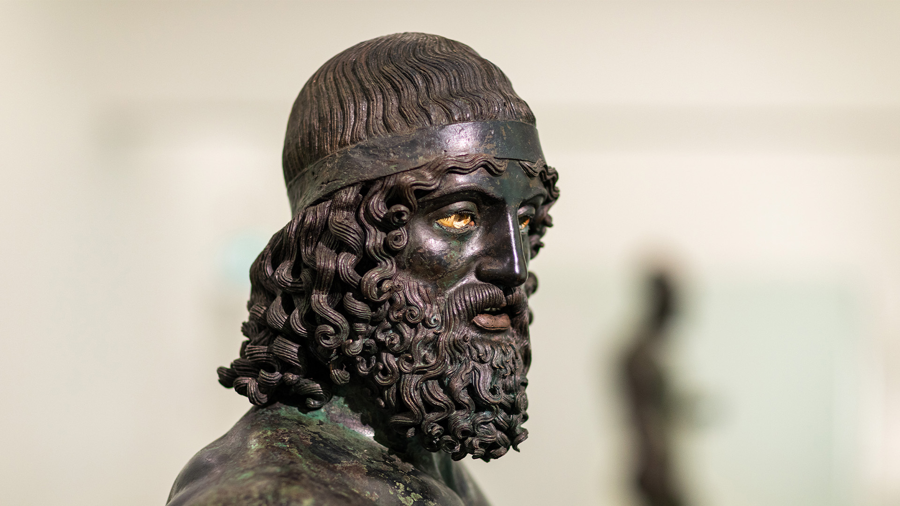
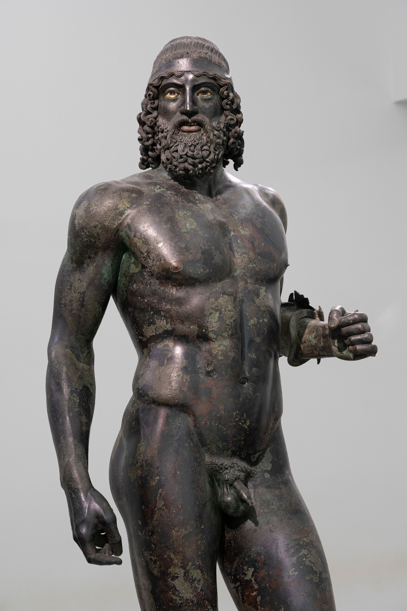
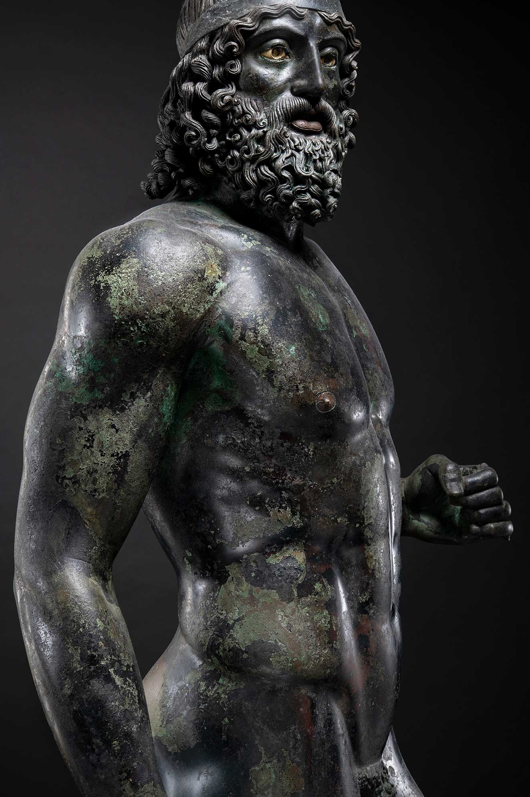

Materia, Bronzo e la Luce dell'Antichità
Spesso considerati solo come imponenti sculture di bronzo scuro, i Bronzi di Riace nascondono un legame profondo con la luce, dove l'arte antica, la chimica della materia e l'illuminotecnica moderna si incontrano.
Per gli scultori dell'età classica, attribuibili a grandi maestri come Policleto, Fidia o la loro cerchia, la luce non era un vero elemento decorativo, ma il fattore fondamentale per dare volume e vita alla scultura anatomica. Realizzati con la raffinata tecnica della fusione a cera persa cava, in cui veniva colata una lega di bronzo composta prevalentemente da rame e stagno, i Bronzi non avevano originariamente l'aspetto scuro con cui li conosciamo oggi.
Una volta completati, venivano accuratamente levigati e lucidati fino a raggiungere un colore biondo-dorato e una superficie quasi specchiante. Collocate all'aperto nei santuari e negli spazi pubblici dell'antica Grecia, le statue riflettevano direttamente i raggi del sole: il gioco di bagliori luminosi e ombre esaltava la plasticità della muscolatura e la tensione dei corpi, facendole apparire maestose, dinamiche e incredibilmente vive.

Intarsi Policromi e Contrasti Cromatici
Per creare un netto contrasto cromatico e luminoso con il corpo dorato, gli artigiani applicarono inoltre materiali differenti in punti strategici delle sculture. Utilizzarono rame puro, caratterizzato da una tonalità più calda e rossastra, per modellare le labbra e i capezzoli; intrecciarono sottili lamine d'argento per i denti socchiusi della Statua A, pensate per catturare improvvisi bagliori di luce al variare dell'angolazione dell'osservatore; infine, impiegarono avorio, calcite e pietra scura per gli occhi, lavorati finemente per rifrangere la luce e conferire allo sguardo uno straordinario realismo e una profonda espressività.

La Patina del Mare e l'Ossidazione Chimica
Tuttavia, il rapporto primario tra queste sculture e la luce solare si interruppe bruscamente con il naufragio della nave romana che le trasportava e con i duemila anni trascorsi sul fondo del mare Ionio, prima del loro casuale ritrovamento il 16 agosto 1972 a Riace Marina da parte del subacqueo Stefano Mariottini. L'interazione prolungata tra la lega metallica, l'ossigeno e i sali dell'acqua marina ha innescato complessi processi chimici di ossidazione. Il metallo ha così sviluppato una caratteristica patina scura che tende ad assorbire la luce anziché rifletterla. Questo mutamento cromatico, pur lontano dall'aspetto solare e dorato dell'epoca greca, conferisce oggi alle sculture una solennità drammatica e un fascino monumentale del tutto nuovo.
Il Risveglio Moderno: L'Illuminazione a LED Dinamica
Oggi i Bronzi sono conservati al Museo Archeologico Nazionale di Reggio Calabria (MArRC) all'interno di una sala ad aria filtrata e clima controllato, concepita per prevenire la corrosione. Per restituire alle opere l'originale interazione con la luce naturale, la stanza è stata dotata di uno specifico e innovativo sistema di illuminazione a LED dinamico, progettato dall'azienda illuminotecnica Targetti.
Questo sistema modifica continuamente sia l'intensità luminosa sia la temperatura del colore della luce bianca, alternando toni più caldi a toni più freddi. La luce sfuma e muta gradualmente direttamente sulle sculture, imitando il naturale percorso del sole durante il corso della giornata. In questo modo, la luce "scivola" sulle anatomie, mette in risalto la tridimensionalità dei muscoli, le incisioni della barba e i dettagli dei diversi materiali intarsiati, permettendo al visitatore di percepire le statue non come manufatti statici, ma come opere in continua ed evolutiva trasformazione.
